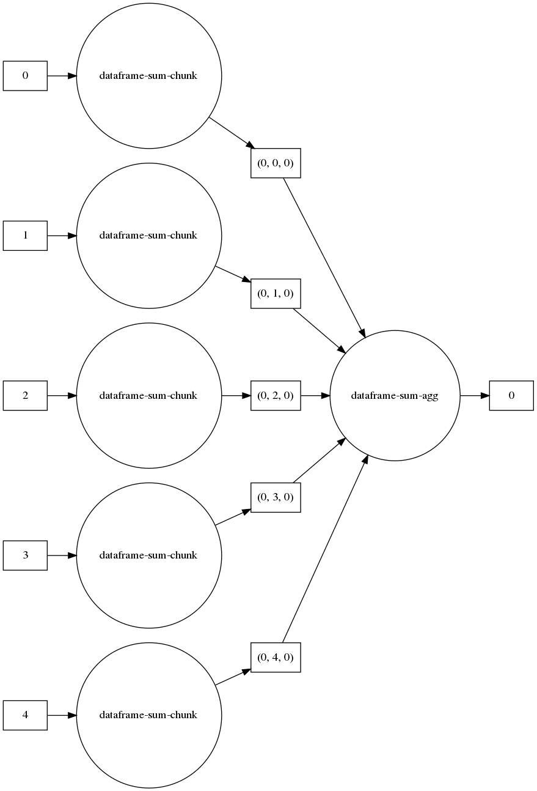
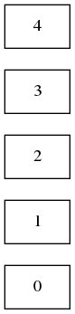

import numpy as np
import dask.array as da
import pandas as pd
import sqlalchemy as db
from sqlalchemy import create_engine
import sqlite3
import pandas as pdThis post includes code from Scalable-Data-Analysis-in-Python-with-Dask and coiled-examples.
engine = db.create_engine('sqlite:///fiscal_data.db')
connection = engine.connect()
metadata = db.MetaData()engine.execute("SELECT * FROM fiscal_data LIMIT 1").fetchall()[(1996, 'East China', 'Anhui', '2093.3', 50661, 631930, 147002)]sql = """
SELECT year
, region
, province
, gdp
, fdi
, it
, specific
FROM fiscal_data
"""
cnxn = connectiondf = pd.read_sql(sql, cnxn)df| year | region | province | gdp | fdi | it | specific | |
|---|---|---|---|---|---|---|---|
| 0 | 1996 | East China | Anhui | 2093.3 | 50661 | 631930 | 147002.0 |
| 1 | 1997 | East China | Anhui | 2347.32 | 43443 | 657860 | 151981.0 |
| 2 | 1998 | East China | Anhui | 2542.96 | 27673 | 889463 | 174930.0 |
| 3 | 1999 | East China | Anhui | 2712.34 | 26131 | 1227364 | 285324.0 |
| 4 | 2000 | East China | Anhui | 2902.09 | 31847 | 1499110 | 195580.0 |
| ... | ... | ... | ... | ... | ... | ... | ... |
| 355 | 2003 | East China | Zhejiang | 9705.02 | 498055 | 2261631 | 391292.0 |
| 356 | 2004 | East China | Zhejiang | 11648.7 | 668128 | 3162299 | 656175.0 |
| 357 | 2005 | East China | Zhejiang | 13417.68 | 772000 | 2370200 | 656175.0 |
| 358 | 2006 | East China | Zhejiang | 15718.47 | 888935 | 2553268 | 1017303.0 |
| 359 | 2007 | East China | Zhejiang | 18753.73 | 1036576 | 2939778 | 844647.0 |
360 rows × 7 columns
df.columnsIndex(['year', 'region', 'province', 'gdp', 'fdi', 'it', 'specific'], dtype='object')from dask import dataframe as dd ddf = dd.from_pandas(df, npartitions=5)print(ddf)Dask DataFrame Structure:
year region province gdp fdi it specific
npartitions=5
0 int64 object object object int64 int64 float64
72 ... ... ... ... ... ... ...
... ... ... ... ... ... ... ...
288 ... ... ... ... ... ... ...
359 ... ... ... ... ... ... ...
Dask Name: from_pandas, 5 tasksddf.npartitions5ddf.npartitions5len(ddf)360from dask.distributed import Client
client = Client(processes=False, threads_per_worker=2,
n_workers=3, memory_limit='4GB')
clientClient
|
Cluster
|
ddf.describe().compute()| year | fdi | it | specific | |
|---|---|---|---|---|
| count | 360.000000 | 3.600000e+02 | 3.600000e+02 | 3.560000e+02 |
| mean | 2001.500000 | 1.961394e+05 | 2.165819e+06 | 5.834707e+05 |
| std | 3.456857 | 3.030440e+05 | 1.769294e+06 | 6.540553e+05 |
| min | 1996.000000 | 2.000000e+00 | 1.478970e+05 | 8.964000e+03 |
| 25% | 1998.750000 | 3.309900e+04 | 1.077466e+06 | 2.237530e+05 |
| 50% | 2001.500000 | 1.411025e+05 | 2.020634e+06 | 4.243700e+05 |
| 75% | 2004.250000 | 4.065125e+05 | 3.375492e+06 | 1.011846e+06 |
| max | 2007.000000 | 1.743140e+06 | 1.053331e+07 | 3.937966e+06 |
ddf.head()| year | region | province | gdp | fdi | it | specific | |
|---|---|---|---|---|---|---|---|
| 0 | 1996 | East China | Anhui | 2093.3 | 50661 | 631930 | 147002.0 |
| 1 | 1997 | East China | Anhui | 2347.32 | 43443 | 657860 | 151981.0 |
| 2 | 1998 | East China | Anhui | 2542.96 | 27673 | 889463 | 174930.0 |
| 3 | 1999 | East China | Anhui | 2712.34 | 26131 | 1227364 | 285324.0 |
| 4 | 2000 | East China | Anhui | 2902.09 | 31847 | 1499110 | 195580.0 |
groupby_yr = ddf.groupby('year').count()groupby_yr.compute()| region | province | gdp | fdi | it | specific | |
|---|---|---|---|---|---|---|
| year | ||||||
| 1996 | 30 | 30 | 30 | 30 | 30 | 29 |
| 1997 | 30 | 30 | 30 | 30 | 30 | 28 |
| 1998 | 30 | 30 | 30 | 30 | 30 | 30 |
| 1999 | 30 | 30 | 30 | 30 | 30 | 30 |
| 2000 | 30 | 30 | 30 | 30 | 30 | 29 |
| 2001 | 30 | 30 | 30 | 30 | 30 | 30 |
| 2002 | 30 | 30 | 30 | 30 | 30 | 30 |
| 2003 | 30 | 30 | 30 | 30 | 30 | 30 |
| 2004 | 30 | 30 | 30 | 30 | 30 | 30 |
| 2005 | 30 | 30 | 30 | 30 | 30 | 30 |
| 2006 | 30 | 30 | 30 | 30 | 30 | 30 |
| 2007 | 30 | 30 | 30 | 30 | 30 | 30 |
group_region = ddf.groupby('region')['gdp'].sum()group_region.compute()region
East China 2093.32347.322542.962712.342902.093246.713519....
North China 1789.22077.092377.182678.823161.663707.964315....
Northwest China 722.52793.57887.67956.321052.881125.371232.031...
South Central China 6834.977774.538530.889250.6810741.2512039.2513...
Southwest China 1315.121509.751602.381663.21791.01976.862232.8...
Northeast China 2370.52667.52774.42866.33151.43390.13637.24057...
Name: gdp, dtype: objectddf.nlargest(5, 'fdi').compute()| year | region | province | gdp | fdi | it | specific | |
|---|---|---|---|---|---|---|---|
| 179 | 2007 | East China | Jiangsu | 21742.05 | 1743140 | 3557071 | 1188989.0 |
| 71 | 2007 | South Central China | Guangdong | 31777.01 | 1712603 | 4947824 | 859482.0 |
| 70 | 2006 | South Central China | Guangdong | 26587.76 | 1451065 | 4559252 | 1897575.0 |
| 178 | 2006 | East China | Jiangsu | 18598.69 | 1318339 | 2926542 | 1388043.0 |
| 69 | 2005 | South Central China | Guangdong | 22557.37 | 1236400 | 4327217 | 1491588.0 |
ddf.sum().visualize()
ddf.sum().visualize(rankdir="LR")
(ddf).visualize(rankdir="LR")
ddf.visualize(rankdir="LR")
client.close()